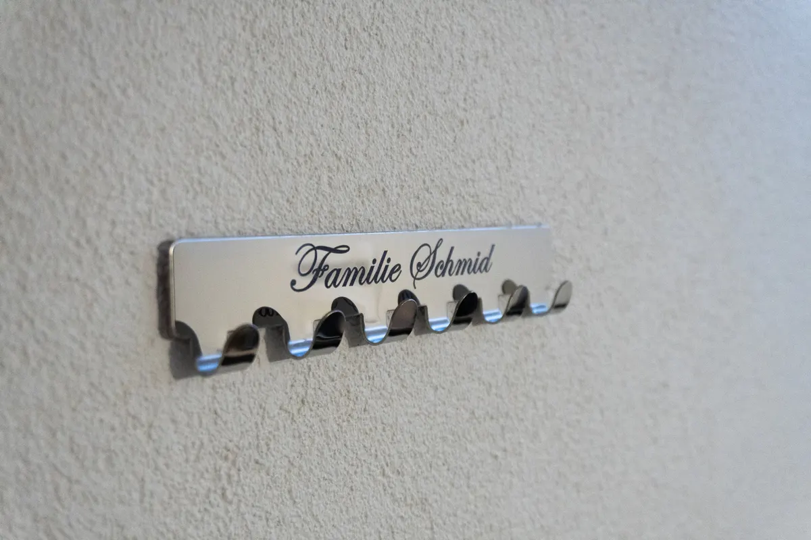
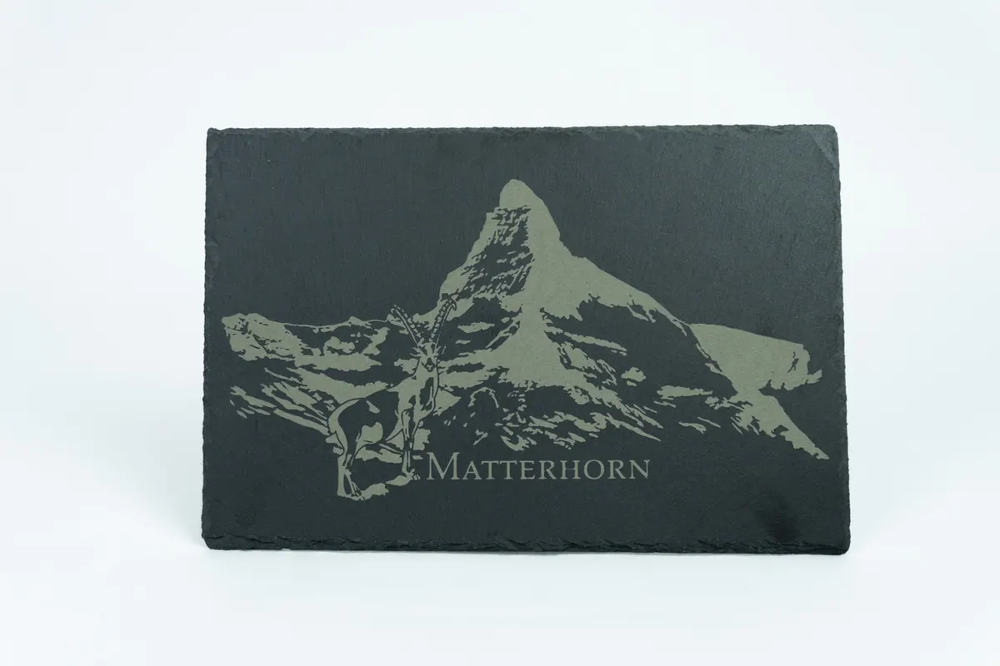
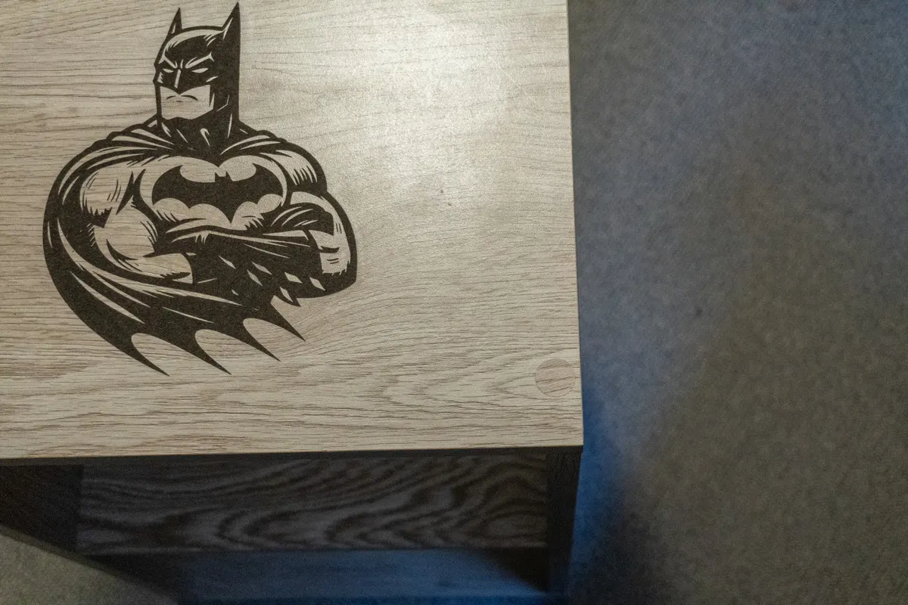
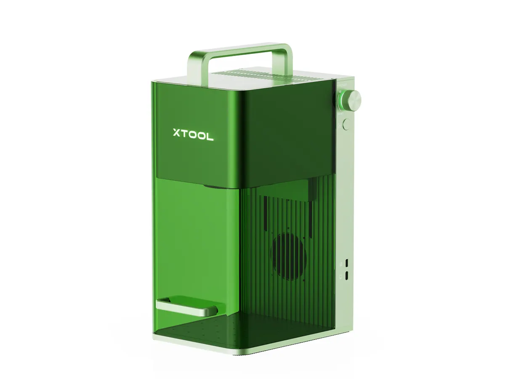
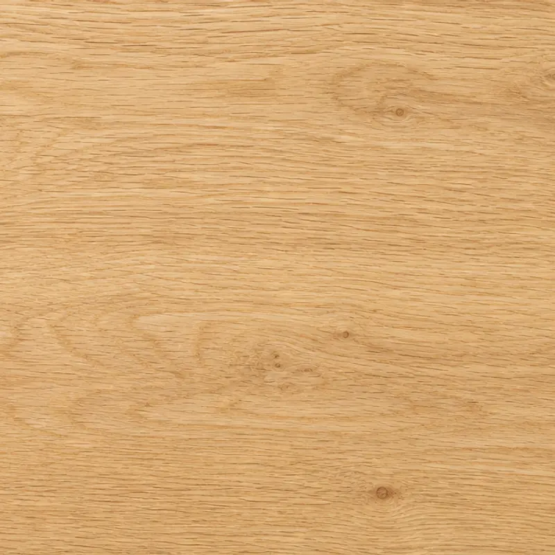
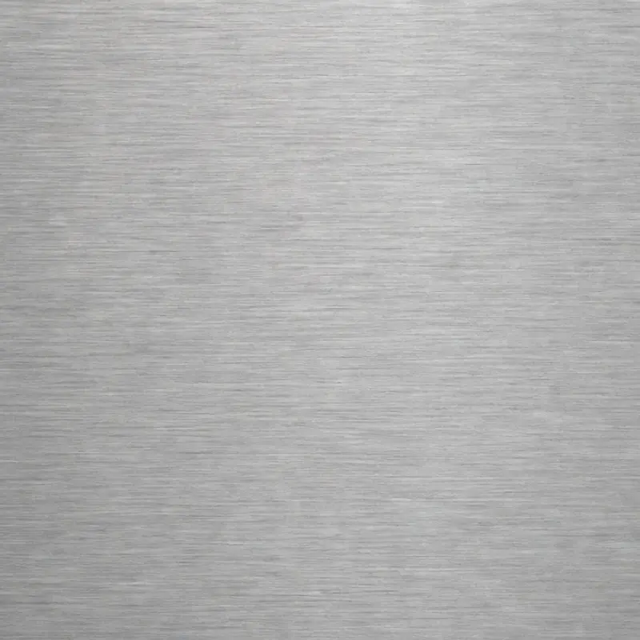
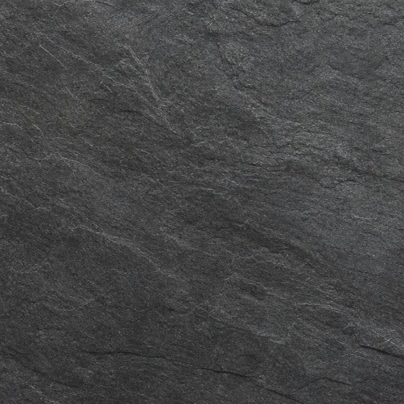
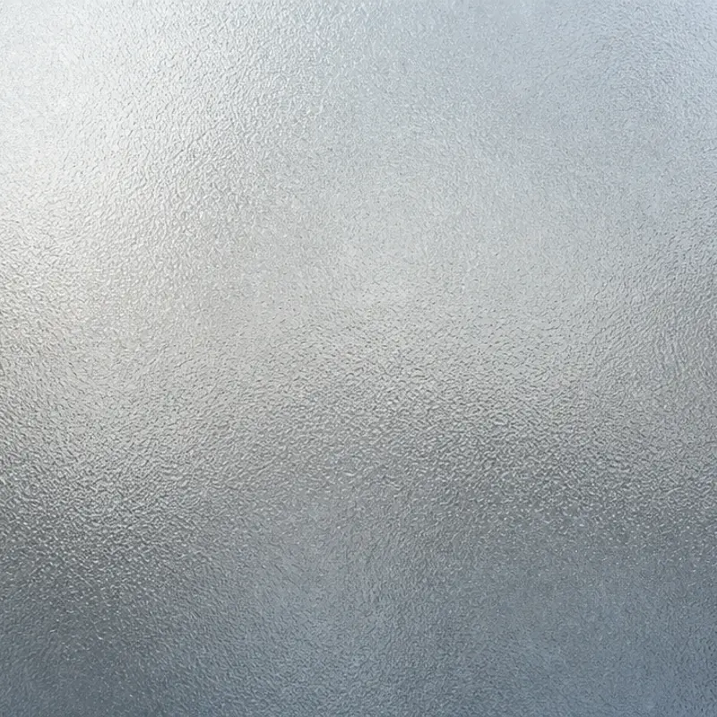
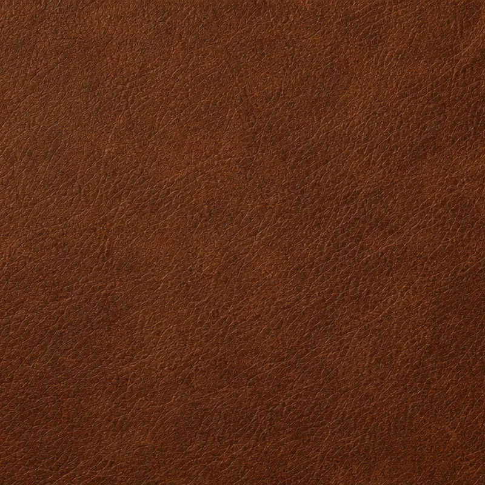

Firmenprodukte personalisieren
Wir veredeln Ihr bestehendes Sortiment mit Logo, Text oder Grafik – so wie die Patronen, Werkzeuge und Ausrüstungsteile, die wir regelmässig für den Armyshop gravieren.
Gravur on demand · Lasergravur aus Murten
Wir gravieren Ihre Produkte, Werbegeschenke und Schilder – ab einem Stück bis zur Grossserie. Schnell, präzise und mit direktem Draht zu den beiden Machern.

01 Aebischer & Viteri
Gravur on demand aus Murten: Sie bestellen, wir gravieren, verpacken und versenden – persönlich, schnell und ab einem Stück. Ohne Lager, ohne eigene Maschine.
Keine eigene Maschine, kein Lager, kein Risiko: Sie bestellen, wir gravieren – auf Abruf, in der Menge, die Sie wirklich brauchen.
Wir fertigen in Murten – ein kleines, flexibles Team, und Sie sprechen immer direkt mit einem der Geschäftsführer.
Kleine Aufträge erledigen wir zügig – ohne Wartezeit auf eine Sammelproduktion. Serien planen wir verbindlich, inklusive Nachbestellung.
Vom einzelnen Geschenk bis zur Serie für die ganze Belegschaft – derselbe Prozess, dieselbe Qualität.
Vertrauen uns bereits
02 Unser Angebot
Produkt veredeln, Marke zeigen, Teile kennzeichnen – für jede Aufgabe die passende Technik. Was hier nicht steht, klären wir im Gespräch.

Namen, Schriftzüge, Seriennummern
Von der einzelnen Widmung bis zur nummerierten Serie: scharf, dauerhaft und in Ihrer Schrift – auf Holz, Metall oder Schiefer.
Mehr erfahren
Logos, Wappen, Illustrationen
Ihr Logo exakt so, wie es Ihre Marke verlangt. Wir bereiten Ihre Vorlage auf und bringen feine Linien und Flächen präzise aufs Material.
Mehr erfahrenKonturen, Schilder, Formteile
Ausschnitte millimetergenau: Schilder, Deko-Elemente, Schablonen oder Kleinserien in Ihrer Wunschform – aus Holz, weitere Werkstoffe auf Anfrage.
Mehr erfahren
Ungewöhnliche Formen und Materialien
Patronen, Taschenmesser, Flachmann, Möbelstücke, Werkzeug: Wenn ein Objekt rund, klein oder eigenwillig ist, finden wir den Weg – fragen Sie einfach.
Mehr erfahren
Live an Ihrem Anlass
Mit mobiler Technik gravieren wir direkt bei Ihnen – an Messen, Kundenevents oder Firmenfeiern. Ein Erlebnis, das in Erinnerung bleibt.
Mehr erfahren03 Für Firmen
Handel, Gewerbe, Immobilien, Dienstleister: Sie liefern das Produkt oder die Idee, wir übernehmen die Veredelung – als Einzelstück oder Serie.
Wir veredeln Ihr bestehendes Sortiment mit Logo, Text oder Grafik – so wie die Patronen, Werkzeuge und Ausrüstungsteile, die wir regelmässig für den Armyshop gravieren.

Give-aways, die nicht in der Schublade landen: gravierte Kugelschreiber, Taschenmesser, Untersetzer, Schneidebretter.
Klingelschilder, Briefkastenschilder, Namens- und Hinweisschilder für Verwaltungen, Immobilien und Gebäudetechnik – einheitlich und jederzeit nachbestellbar.

Gabelschlüssel für Lehrabgänger, Werkzeugsets mit Firmenlogo, Typenschilder und Kennzeichnungen, die den Werkstattalltag überstehen.
Ein Einzelstück oder eine ganze Serie: beides läuft bei uns über denselben Prozess – mit Muster vor der Serie und Nachbestellung ohne neue Einrichtung.
Anfrage starten04 Materialien
Jedes Material verhält sich anders – wir beraten Sie, was zu Ihrem Produkt passt, und machen im Zweifel einen Materialtest.
Ihr Material ist nicht dabei? Schicken Sie uns ein Muster.
Material prüfen lassen




05 Aus der Werkstatt
Werkzeug, Taschenmesser, Flachmann, Schmuck, Schneidebretter: Ihr Produkt ist noch nicht dabei? Dann wird es das nächste.


07 Arbeitsweise
Kurze Wege, klare Absprachen, keine Warteschlaufen. Sie sprechen direkt mit den Personen, die anschliessend gravieren.
Sie schildern uns per Formular, Telefon oder WhatsApp, was Sie brauchen. Ein Satz, ein Foto oder eine Skizze genügen.
Wir klären Material, Menge und Machbarkeit, empfehlen die passende Technik und gravieren auf Wunsch ein Muster.
Freigabe erteilt, Maschine läuft. Stück für Stück mit Qualitätskontrolle – ob eines oder viele.
Abholung in der Werkstatt oder Versand. Nachbestellungen laufen später ohne neue Einrichtung.
08 Häufige Fragen
Und wenn Ihre Frage hier nicht steht: Fragen Sie einfach. Wir antworten unkompliziert und ohne Verkaufsgespräch.
Nein. Ob Einzelstück oder Grossserie: Fragen Sie mit Ihrer Stückzahl an, wir sagen Ihnen offen, was sinnvoll und wirtschaftlich ist.
Nein. Sie brauchen weder eigene Technik noch Lagerbestand. Sie bestellen die Menge, die Sie tatsächlich benötigen – wir gravieren auf Abruf.
Ja, bei Firmenprodukten ist das der Normalfall: Sie schicken uns Ihr Sortiment, wir veredeln es. Sagen Sie uns vorab, um welches Material und welche Stückzahl es geht.
Am besten als Vektordatei (SVG, AI, EPS oder PDF). Haben Sie nur ein Bild, melden Sie sich trotzdem: Wir bereiten Vorlagen auf und sagen offen, was das Ergebnis hergibt.
Das hängt von Menge, Material und Vorlage ab. Kleine Aufträge erledigen wir zügig; bei Serien nennen wir Ihnen mit der Offerte einen verbindlichen Termin.
Ja. Mit mobiler Technik gravieren wir direkt an Ihrem Anlass – an Messen, Firmenfeiern oder Kundenevents.
Anfrage in zwei Minuten
Material wählen, Menge angeben, Idee beschreiben – wir melden uns persönlich, ohne Warteschlaufe.